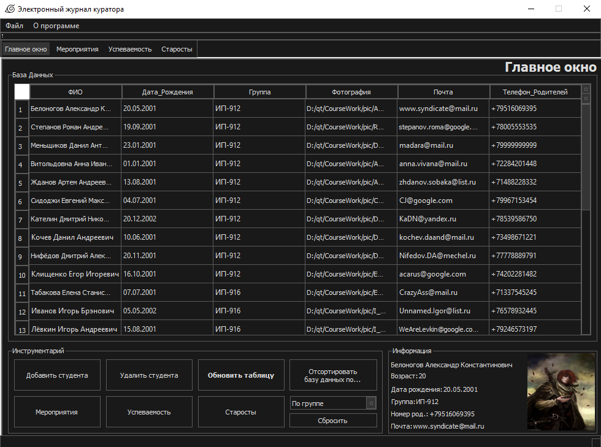
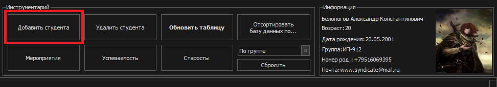
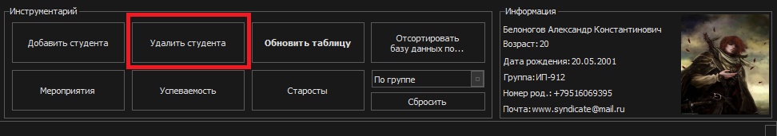
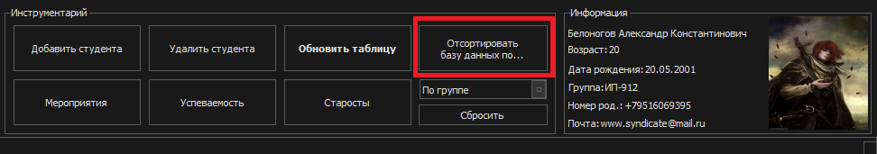
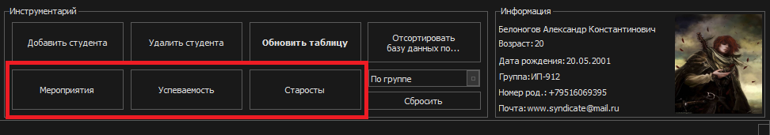
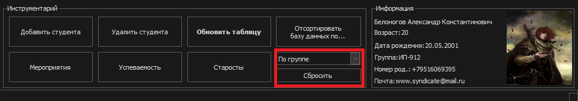

ГЛАВНОЕ ОКНО

1. Добавить студента

Открывается новая
форма, в которой необходимо заполнить поля
с информацией о студенте. То есть “ФИО”,
“Дата рождения”, “Группа”, “Фотография”,
“Почта” и “Телефон родителей”. Как только
вся необходимая информация будет
заполнена – нажимаем OK и студент
автоматически запросом добавится в таблицу.
2. Удалить студента

Необходимо будет
нажать в таблице на ту строку со студентом, которую хотите удалить.
Как только выбрали строку – нажатием на кнопку “Удалить студента”,
студент удалится из таблицы.
3. Обновить таблицу

Если были внесены какие-то изменения в таблицу
извне или, возможно, после добавления/удаления студента его либо нет,
либо он удалился и всё ещё виден в таблице, то достаточно нажать эту
кнопку. Она обновит таблицу и все связанные с ней данные. Соответственно,
возникшие проблемы исчезнут.
4. Мероприятия, Успеваемость и Старосты

Отвечают за переход по вкладкам приложения непосредственно либо с помощью самих вкладок, либо
кнопок. Куда мышкой быстрее дотянуться – то и удобнее.
5. Отсортировать базу данных
Тут нам предоставляется
в выпадающем меню ниже сделать выбор, будет выполнена сортировка
таблицы по группе или же ФИО. Соответственно выбираем в
выпадающем меню необходимый ключ сортировки и нажимаем “Отсортировать
базу данных по…”
6. Сбросить

Кнопка “Сбросить” отвечает за возврат таблицы в исходное состояние,
до сортировки.